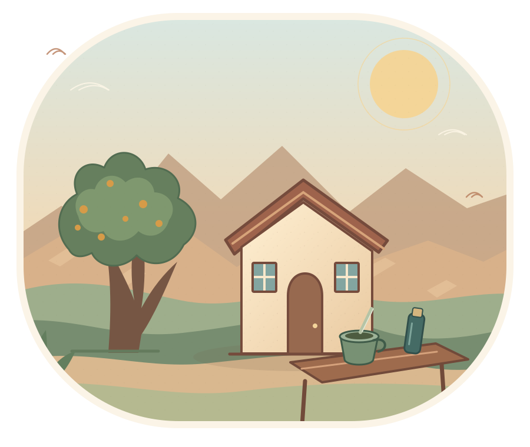

UN LUGAR SIN APURO
Un mate.
Una charla.
Un ratito nuestro.
Hola, soy Elías. Prepará el agua, buscá tu lugar favorito y arrimate. Acá compartimos cuentos, pequeñas historias del Chañar, curiosidades del valle y dibujos para pintar. Todo con el espíritu sencillo de una ronda de mates.
El agua se vuelve a calentar.

para quedarse
ya canta
matecito?
EL CORAZÓN DE ESTE LUGAR
La ronda empieza
cuando alguien se queda.
Hay algo lindo en preparar un mate para otra persona. No hace falta tener un gran tema: alcanza con mirar por la ventana, comentar el viento o contar una historia que tenías guardada. Este fogoncito es para eso.
Escuchar historias de la rondaCOSITAS PARA ACOMPAÑAR EL MATE
Elegí algo.
La ronda sigue.
Una historia para escuchar, una curiosidad para comentar o una pinturita para guardar. Servite a tu manera.
No encontré esa cosita. Probá con otra palabra.
UN PEQUEÑO RECREO
Dejá que se enfríe
un poquito el apuro.
El mundo puede esperar mientras se enfría el agua.
con cariño
SI TE NACE, INVITAME UN MATE
Este rinconcito
también se ceba entre todos.
Todo lo que encontrás acá es gratuito. Si alguna historia te acompañó o imprimiste una pinturita, podés colaborar voluntariamente con lo que puedas. No hay obligación, monto mínimo ni nada a cambio.
Y si hoy no podés o no querés, está perfecto. Me alegra que hayas pasado por esta ronda.
La pava se puede volver a calentar.
Gracias por compartir esta ronda.